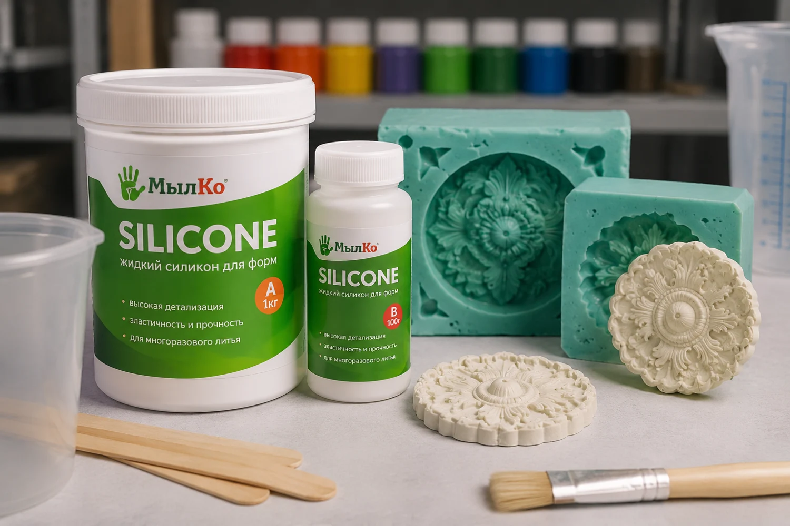

Силикон для формы
Alcorsil 20
Для гипсовых фигур, свечей и мыла. Эластичную форму снимают с образца, а затем заполняют материалом отливки.
- Основа
- Оловянный силикон
- Твёрдость формы
- 20 по Шору A
Подбор материала
Выберите задачу. Посмотрите, из чего делают форму, что заливают внутрь и чем покрывают готовое изделие.
Выбрать задачу ↓
Составов в подборке — 6
Силикон для формы
Для гипсовых фигур, свечей и мыла. Эластичную форму снимают с образца, а затем заполняют материалом отливки.

Мягкий силикон для рельефа
Для восковых и гипсовых отливок со сложным рельефом. Мягкая форма помогает извлечь деталь с поднутрениями. Серосодержащая глина несовместима с этим составом.

Полиуретан для формы
Для форм под бетонную плитку, искусственный камень и архитектурный декор. Бетон заливают в готовую полиуретановую форму.

Литьевой пластик
Для жёстких копий, сувениров и моделей. Жидкий пластик заливают в готовую форму. Рабочее время уточните в описании выбранной фасовки.

Прозрачное эпоксидное покрытие
Для глянцевой отделки дерева, бетона и штукатурки. Если нужна объёмная прозрачная отливка, укажите толщину слоя в запросе мастерской.

Эпоксидное гелевое покрытие
Для поверхностного слоя мастер-моделей, кожухов и композитной оснастки. При подборе для горячего процесса укажите рабочую температуру.